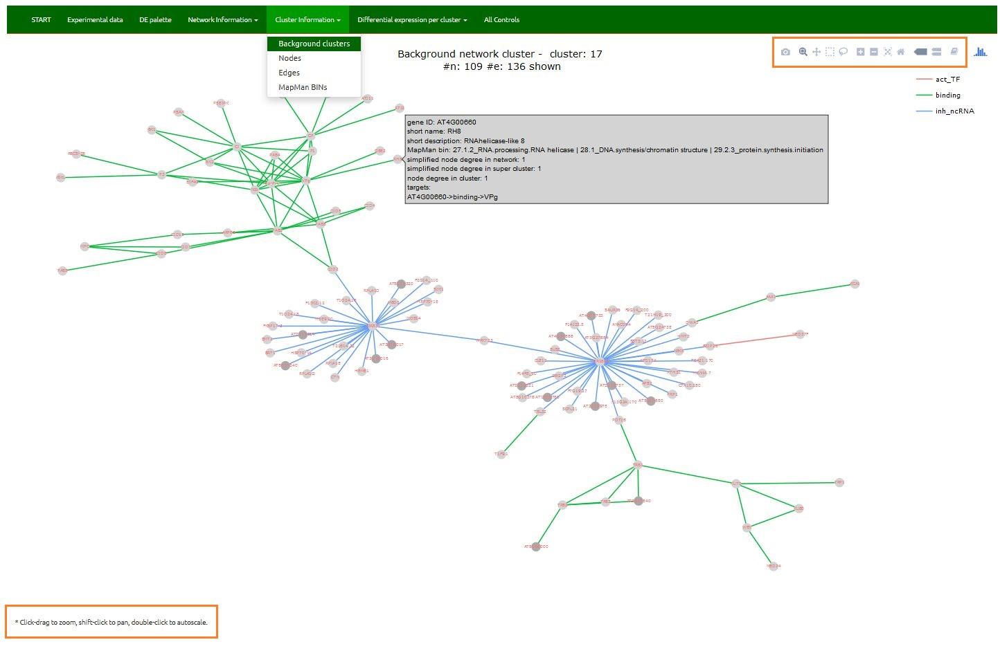
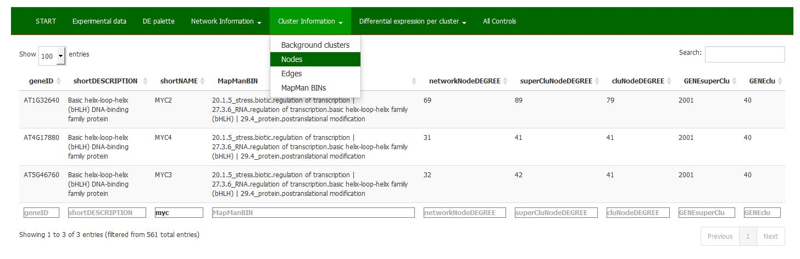

Cluster Information
4.1. Background cluster
Interactive ‘graph’ of selected cluster, including node and edge information.
Click-drag to zoom, shift-click to pan, double-click to autoscale.

4.2. Nodes
Tabular display of node related information per selected cluster or node ID.

- geneID: geneID.
- shortDESCRIPTION: gene description.
- shortNAME: gene short name.
- MapManBIN: MapMan bins to which gene balongs to.
- networkNodeDEGREE: simplified (without loops and multiple reactions) gene degree/valency (the number of edges incident to the vertex) within the complete network.
- superCluNodeDEGREE: gene degree/valency (the number of edges incident to the vertex) within the super cluster. Identical to cluNodeDEGREE if only ‘one round’ of clustering was executed.
- cluNodeDEGREE: gene degree/valency (the number of edges incident to the vertex) within the cluster.
- GENEsuperCluster: super cluster ID.
- GENEcluster: cluster ID.
4.3. Edges
Tabular display of edge related information per selected cluster.

All edges within the selected cluster and between selected cluster and any other clusters are shown. Node degree on a network level is used in filtering.
- STARTgene: geneID at which the edge begins.
- ENDgene: geneID at which the ends.
- reactionTYPE: type of reaction.
- STARTcluster: no. of the cluster the STARTgene belongs to.
- ENDcluster: no. of the cluster the ENDgene belongs to. These two are identical if both nodes are within the same cluster.
- STARTsuperClu and ENDsuperClu: no. of the super cluster start/end vertex was a memeber of before further split.
- netSTARTnodeDegree: STARTgene degree/valency (the number of edges incident to the vertex) within the complete network.
- netENDnodeDegree: ENDgene degree/valency (the number of edges incident to the vertex) within the complete network.
- superCluSTARTnodeDegree, superCluENDnodeDegree, cluSTARTnodeDegree and cluENDnodeDegree: START/ENDgene degree within the (super) cluster.
4.4. subnetwork MapMan bins
Word cloud of node MapMan bins in a selected network per selected cluster. Place a mouse over interesting bin to get the frequency. Find description of a bin in the table below.